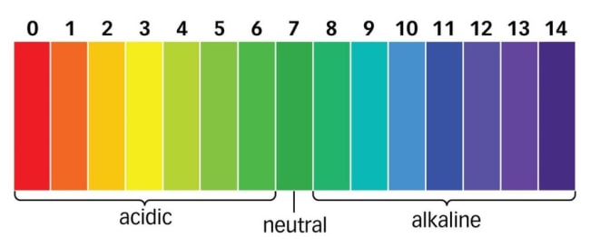

First of all what are acid-base indicators?
Acid-base indicators are indicators thet indicade whether it is an acid or a base.
Most common acid base indicators are:
litmus paper indicates whether it is acid base only.
universal indicator indicates whether it is acid or base but also how strong it really it using the pH scale
pH scale is the scale which shows how much acidic or alkaline it is(alkaline is base that dissolves in water)
there are also some other kind of indicators that are used in the factory but have their own pH scale for example: